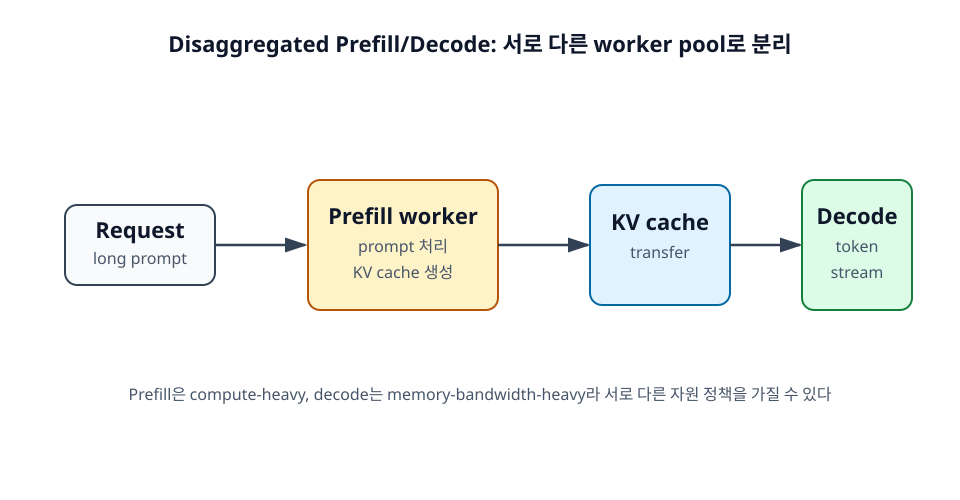

19장. Disaggregated Prefill/Decode¶
Prefill과 decode는 병목이 다르다. Prefill은 긴 prompt를 한꺼번에 처리하므로 compute-heavy한 성격이 있고, decode는 매 token마다 KV cache를 참조하므로 memory-bandwidth-heavy한 성격이 있다. Disaggregated Prefill/Decode는 이 두 단계를 서로 다른 worker pool로 분리하는 serving 구조다.

학습 목표¶
- Prefill과 decode를 분리하는 이유를 이해한다.
- 분리형 serving 구조의 구성 요소를 설명한다.
- 개발자 관점에서 언제 중요한지 판단한다.
- KV cache transfer와 offload가 분리형 serving의 성능을 좌우한다는 점을 이해한다.
19.1 왜 prefill과 decode를 분리하는가¶
같은 GPU에서 prefill과 decode를 모두 처리하면 두 단계가 서로 간섭할 수 있다. 긴 prefill이 들어오면 이미 streaming 중인 decode 요청의 TPOT가 나빠질 수 있다. 반대로 decode 요청이 많으면 새 요청의 prefill이 queue에서 기다릴 수 있다.
19.1.1 두 단계의 병목이 다르다¶
Prefill은 prompt 전체를 처리하고 KV cache를 만든다. 긴 sequence에 대한 attention 계산이 중요하다. Decode는 output token을 하나씩 생성하며, 매 step마다 KV cache를 읽는다. 따라서 두 단계는 최적화해야 할 자원 특성이 다르다.
이 차이를 이용하면 prefill에 적합한 worker와 decode에 적합한 worker를 따로 구성할 수 있다.
19.1.2 같은 GPU에서 서로 간섭할 수 있다¶
긴 prefill 요청 하나가 GPU를 오래 점유하면 decode 중인 요청의 token stream이 끊길 수 있다. 사용자는 답변이 나오다가 멈추는 것처럼 느낄 수 있다. 반대로 decode 요청이 많아 GPU가 계속 바쁘면 새 요청의 TTFT가 늘어난다.
Chunked prefill은 이 간섭을 완화하는 한 가지 방법이고, disaggregation은 더 구조적인 분리 방법이다.
19.1.3 서로 다른 SLO를 가질 수 있다¶
서비스에 따라 TTFT와 TPOT의 중요도가 다를 수 있다. Chat UI에서는 첫 token도 중요하지만 이후 token이 끊기지 않는 것도 중요하다. Batch 처리형 요약 서비스에서는 end-to-end latency가 더 중요할 수 있다.
Prefill과 decode를 분리하면 각 단계에 다른 scheduling 정책과 capacity planning을 적용할 수 있다.
19.2 분리형 serving 구조¶
분리형 구조에서는 prefill worker가 prompt를 처리하고 KV cache를 만든 뒤, decode worker가 이 KV cache를 받아 token 생성을 이어간다. 이때 KV cache transfer가 핵심 이슈가 된다.
19.2.1 Prefill worker¶
Prefill worker는 긴 prompt를 처리하는 데 집중한다. Compute 성능과 긴 sequence attention 처리 효율이 중요하다. Long-context 요청이 많다면 prefill worker pool을 별도로 확장할 수 있다.
19.2.2 Decode worker¶
Decode worker는 KV cache를 이용해 output token을 생성한다. Memory bandwidth, KV cache layout, continuous batching이 중요하다. Decode worker는 stream 품질과 TPOT를 관리하는 핵심이다.
19.2.3 KV cache transfer¶
Prefill worker에서 만든 KV cache를 decode worker로 넘겨야 한다. 이 transfer가 느리면 분리의 이득이 줄어든다. KV cache는 작지 않기 때문에 네트워크와 memory copy 비용이 중요하다.
Disaggregated serving에서 가장 어려운 부분이 바로 이 지점이다. Prefill과 decode를 분리하면 scheduling은 좋아질 수 있지만, KV cache 이동이라는 새로운 비용이 생긴다.
이 이동은 단순히 "한 GPU에서 다른 GPU로 복사"하는 문제에 그치지 않는다. 대규모 serving에서는 KV cache가 GPU HBM, CPU RAM, local SSD, remote storage 사이를 오갈 수 있다. Prefill worker가 만든 cache를 decode worker가 바로 받거나, cache layer에 저장해 두었다가 나중에 다른 요청에서 재사용하는 구조도 가능하다.
따라서 분리형 serving의 성능은 세 가지에 영향을 받는다.
- KV cache를 얼마나 빠르게 전송할 수 있는가?
- 전송과 GPU 계산을 얼마나 겹칠 수 있는가?
- 재사용 가능한 cache를 어느 worker나 storage tier에서 찾을 수 있는가?
이 조건이 맞지 않으면 prefill과 decode를 나누었는데도 latency가 줄지 않을 수 있다. 반대로 긴 prompt가 반복되고 cache transfer가 충분히 빠르면, prefill 재계산을 줄여 TTFT와 비용을 낮출 수 있다.
19.3 개발자 관점의 의미¶
입문자가 로컬 단일 GPU 실습에서 바로 disaggregated serving을 구현할 일은 많지 않다. 하지만 대규모 serving 시스템을 이해하려면 이 개념이 중요하다.
19.3.1 긴 prompt가 많은 서비스에서 중요하다¶
긴 문서 요약, RAG, 코드 분석처럼 prefill이 무거운 workload에서는 prefill과 decode 간섭이 커질 수 있다. 이런 서비스에서는 prefill worker capacity와 decode worker capacity를 따로 보는 것이 도움이 된다.
19.3.2 대규모 serving에서 비용 효율을 높인다¶
서로 다른 단계에 서로 다른 GPU 구성이나 scheduling 정책을 적용하면 비용 효율을 높일 수 있다. 예를 들어 prefill에 강한 worker와 decode throughput에 최적화된 worker를 분리할 수 있다.
물론 운영 복잡도와 KV transfer 비용이 추가되므로 일정 규모 이상에서 의미가 커진다. 이때 KV cache를 단순한 부수 데이터가 아니라 routing과 scheduling의 기준으로 삼기도 한다. 예를 들어 어떤 worker가 특정 prefix의 cache를 이미 가지고 있다면, 같은 prefix를 가진 다음 요청을 그 worker로 보내는 것이 유리할 수 있다.
19.3.3 단일 서버 실습보다 운영 시스템에서 더 중요하다¶
초기 실습에서는 vLLM 단일 서버로 prefill과 decode를 함께 처리해도 충분하다. Disaggregated serving은 대규모 traffic, long-context workload, 엄격한 SLO가 있을 때 검토하는 구조다.
개발자는 이 구조를 "나중에 규모가 커졌을 때 등장하는 architecture pattern"으로 이해하면 된다.
정리¶
Disaggregated Prefill/Decode는 prefill과 decode의 병목 차이를 이용해 두 단계를 다른 worker pool로 분리하는 구조다. 긴 prompt가 많고 대규모 traffic을 처리해야 할 때 유리할 수 있지만, KV cache transfer와 offload라는 새로운 비용과 운영 복잡도가 생긴다.
점검 질문¶
- Prefill과 decode를 같은 GPU에서 처리할 때 어떤 간섭이 생길 수 있는가?
- KV cache transfer는 왜 분리형 serving의 핵심 이슈인가?
- KV-aware routing은 어떤 상황에서 도움이 될 수 있는가?
다음 장으로¶
다음 장부터는 개발자가 직접 만져볼 수 있는 도구를 다룬다. 먼저 vLLM의 기본 실행과 병렬화 설정을 살펴본다.